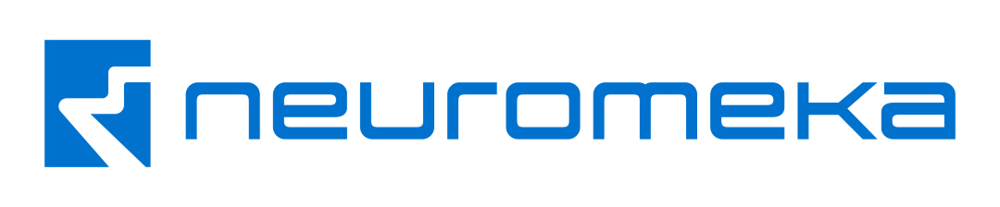

COMPANY / CAREER
NeuroMeka
모방학습 플랫폼 개발·운영, 로봇자동화 과제 지원과 제품 릴리즈 테스트.

- Period
- 2025.12 ~ 2026.06
- Location
- 경북 포항
- Department
- 미래핵심연구부문 / Platform그룹
- Position
- Robotics Software Engineering
- Employment
- 인턴
Company
뉴로메카는 협동로봇과 로봇 부품, 제어·서비스 및 자동화 솔루션을 개발하는 기업입니다.
My Role
- MiMicX 모방학습 플랫폼 기능 개발·안정화
- 텔레오퍼레이션 장치·로봇 연동
- 데이터 수집·학습·추론 파이프라인 확장
- 로봇자동화 과제·시연 지원
- 제품 릴리즈 테스트·기술 문서 정비